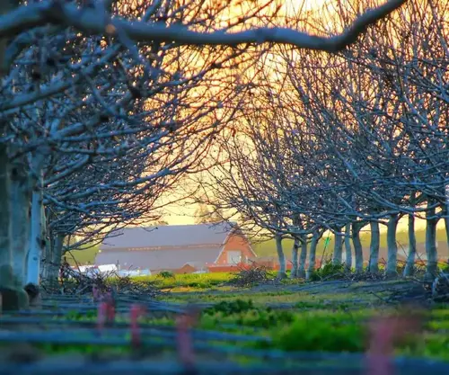
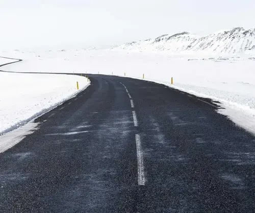
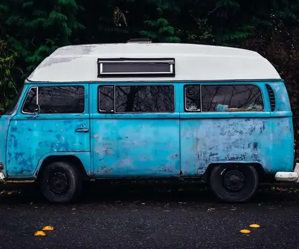
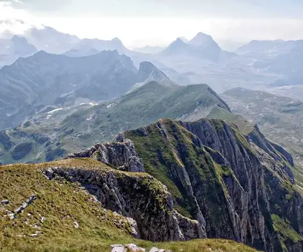

Filiżanka z herbatą

Farma z drzewami

Droga asfaltowa zimą

Niebiski bus z białym dachemZawalony deptakCzłowiek na skraju plaży jeziora i góryCzłowiek piszący na MacBookuDrewniany płotBetonowe sklepienie korytarza

Widok z górskim horyzontem